การใช้งานโมดูล RGB LED#
บทความนี้กล่าวถึง การใช้งานโมดูล RGB LED ที่มีขาควบคุม 3 ขา เพื่อใช้ในการเปิด-ปิด หรือ ปรับค่าความสว่างด้วยสัญญาณ PWM
▷ RGB LED#
ไดโอดเปล่งแสงแบบ 3 สี (RGB LED) ประกอบด้วยวงจร LED ที่ให้แสงสีแดง (Red) สีเขียว (Green) และสีน้ำเงิน (Blue) แยกอิสระจากกัน แต่นำมาใส่ไว้ในตัวถังเดียวกัน และให้แสงที่มีสีเกิดจากการผสมของ 3 สี การใช้งาน RGB LED ก็เหมือน LED โดยทั่วไป แต่เนื่องจากว่า มีการนำ LED จำนวน 3 ดวง ที่ให้แสงสีที่แตกต่างกัน มาใส่ไว้ในตัวถังเดียวกัน จึงมีรูปแบบการต่อวงจรแบ่งได้เป็น 2 กรณี
- Common Anode (CA): มีการต่อขาแอโนด (Anode) ของ LED ทั้ง 3 ดวง ร่วมกัน ดังนั้นจะมีขา V=VCC เพื่อป้อนแรงดันไฟเลี้ยง
- Common Cathode (CC): มีการต่อขาแคโทด (Cathode) ของ LED ทั้ง 3 ดวง ร่วมกัน ดังนั้นจะมีขา GND เพื่อนำไปต่อกับ GND ของระบบ
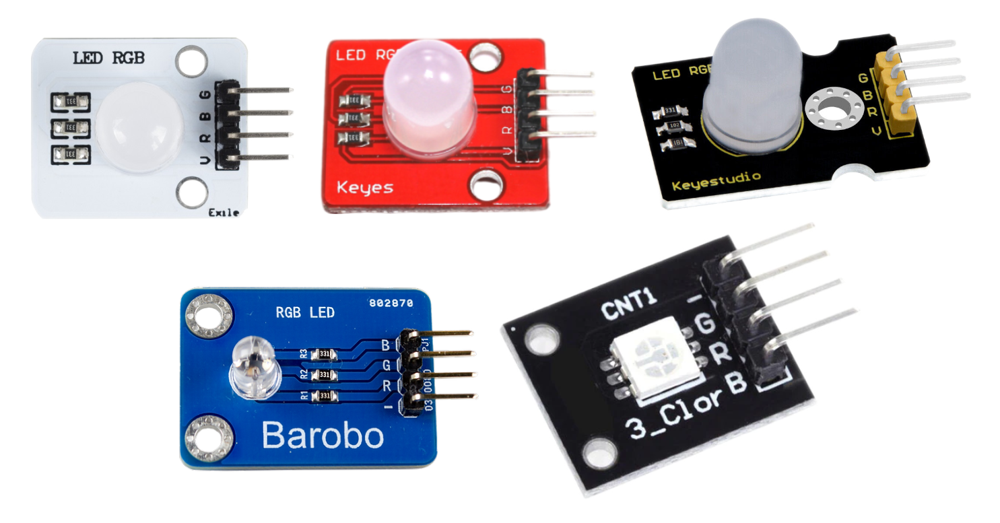
รูป: ตัวอย่างโมดูล RGB แบบหลอด (Round Diffused Tri-Color LED) ที่มีทั้งขนาด 5mm หรือ 10mm และแบบ SMD 5050
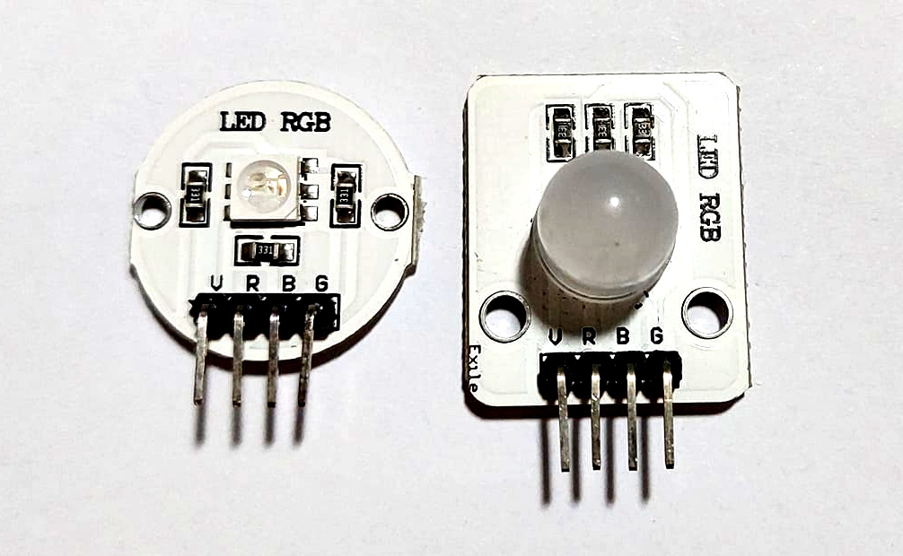
รูป: ตัวอย่างโมดูล RGB ที่ได้เลือกมาใช้งาน
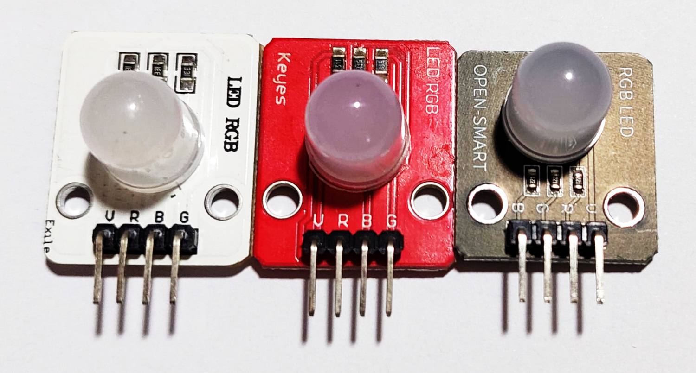
รูป: ตัวอย่างโมดูล RBG (active-low) แต่อาจมีการเรียงลำดับขาแตกต่างกันได้
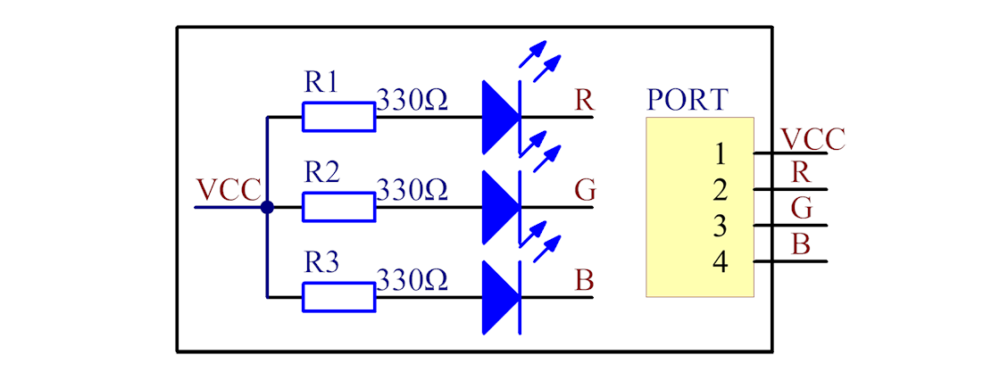
รูป: ผังวงจรสำหรับโมดูล RGB LED (Common-Anode) ที่มีตัวต้านทาน 330 โอห์ม (Source: wiki.sunfounder.cc)
โมดูล RGB LED โดยทั่วไป มีการใส่ตัวต้านทานแบบอนุกรม จำนวน 3 ตัว ไว้เพื่อจำกัดปริมาณกระแส ตัวต้านทานเหล่านี้ อาจมีค่าความต้านทานเท่ากันหรือต่างกันก็ได้ แต่ถ้าแรงดันไบอัสตรง (Forward Voltage: ) ของ LED แต่ละสี มีค่าไม่เท่ากัน (เช่น R: 1.8V~2.4V, G: 2.8V~3.6V, B: 2.8V~3.6V) ดังนั้นถ้าใช้แรงดันไฟเลี้ยงเหมือนกัน ก็ควรจะใช้ตัวต้านทานที่มีค่าไม่เหมือนกัน ทั้งนี้ก็เพื่อให้ได้กระแสที่ผ่าน LED แต่ละดวงมีปริมาณใกล้เคียงกัน ปริมาณกระแสไฟฟ้าที่ไหลจะสัมพันธ์กับความสว่างของ LED
โมดูลของ KeyStudio มีการใช้ตัวต้านทานที่มีค่าแตกต่างกัน
(เช่น 331, 102 และ 181) ในขณะที่โมดูลของ Keyes มีตัวต้านทานที่มีค่า 331 เท่ากันทุกตัว
และโมดูล Keyes SMD-RGB CNT1 ที่มี RGB LED (Common Cathode)
ซึ่งมีแพ็กเกจแบบ SMD 5050 ไม่ได้ใส่ตัวต้านทานมาให้
ผู้ใช้งานจะต้องต่อตัวต้านทานเพิ่ม เพื่อจำกัดกระแสไม่ให้เกิน 30mA (โดยประมาณ)
▷ การเขียนโปรแกรมควบคุมโมดูล RGB LED#
การเขียนโปรแกรมควบคุมการทำงานของโมดูล RGB LED แบ่งเป็น 3 รูปแบบคือ
- การกำหนดสถานะติดหรือดับ (ON/OFF) ของ LED แต่ในดวง
- การสร้างสัญญาณ PWM (Pulse Width Modulation) ที่มีความถี่คงที่ แต่ปรับค่าความกว้างของพัลส์ หรือค่า Duty Cycle ของสัญญาณดังกล่าว ซึ่งจะทำให้สามารถปรับความสว่างของแต่ละสีของ RGB LED ได้
- การสร้างสัญญาณแบบแอนะล็อกเพื่อปรับระดับแรงดันไฟฟ้าของสัญญาณเอาต์พุตและนำไปใช้กับขาควบคุมของ RGB LED เช่น การใช้วงจร DAC (Digital-to-Analog Converter) เพื่อสร้างแรงดันไฟฟ้าที่ปรับระดับได้ แต่วิธีการนี้อาจไม่เป็นที่นิยม
นอกจากนั้นแล้ว จะต้องตรวจสอบด้วยว่า RGB LED เป็นแบบ Common-Anode (ทำงานแบบ Active-Low) หรือ Common-Cathode (ทำงานแบบ Active-High)
โค้ดตัวอย่างต่อไปนี้เป็น Arduino Sketch สาธิตการทำให้ RGB LED ติดและดับไปทีละสี โดยมีการเว้นระยะเวลาแล้วให้วนซ้ำไปเรื่อย ๆ และมีการเลือกใช้ขาของ Arduino Pins: {D11, D10, D9} สำหรับนำไปต่อกับขาของโมดูล RGB LED ที่ R, G และ B ตามลำดับ
// Arduino Sketch Demo (for Arduino Uno/Nano)
#define ACTIVE_LOW // Common-Anode RGB LED
#ifdef ACTIVE_LOW
#define LED_ON (LOW)
#else
#define LED_ON (HIGH)
#endif
#define LED_OFF (!LED_ON)
const int RGB_PINS[] = {11,10,9}; // R,G,B pins
const int DELAY_MS = 500; // delay time in msec.
void setup() {
for (int i=0; i < 3; i++) {
pinMode( RGB_PINS[i], OUTPUT );
digitalWrite( RGB_PINS[i], LED_OFF );
}
}
void loop() {
// This is a static local variable
// used to keep the selected pin index.
static int index = 0;
// Turn on the selected LED pin.
digitalWrite( RGB_PINS[index], LED_ON );
// Delay
delay( DELAY_MS );
// Turn off the selected LED.
digitalWrite( RGB_PINS[index], LED_OFF );
// Select the next LED control pin.
index = (index+1) % 3;
}
ตัวอย่างการเขียนโค้ดและจำลองการทำงานเสมือนจริง ด้วย Online Arduino Wokwi Simulator มีดังนี้
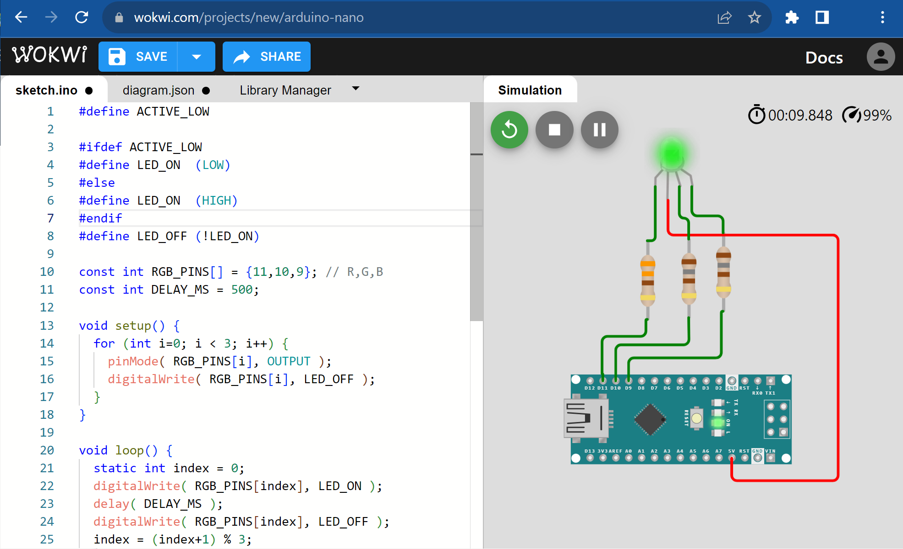
รูป: Wokwi Simulator - Arduino Nano + RGB LED (active-low, on/off)
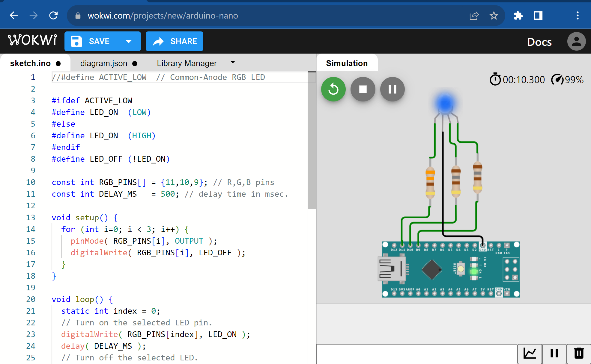
รูป: Wokwi Simulator - Arduino Nano + RGB LED (active-high, on/off)
การตั้งค่าใช้งาน wokwi-rgb-led (เช่น การกำหนดค่าของ Atribute
ที่มีชื่อว่า "common" ให้เป็น "anode" หรือ "cathode") สามารถดูได้จาก
https://docs.wokwi.com/parts/wokwi-rgb-led
ตัวอย่างถัดไปสาธิตการสร้างสัญญาณแบบ PWM สำหรับบอร์ด Arduino Uno/Nano
โดยใช้คำสั่ง analogWrite() ของ Arduino API ซึ่งใช้ค่าเลขจำนวนเต็มในช่วง 0..255
ขาควบคุมของ RGB LED จะถูกเลือกไปทีละขา ดังนั้นสีของ LED ที่ตรงกับขาที่ถูกเลือก
จะเริ่มสว่างขึ้นและดับลง ไปตามลำดับ
#define ACTIVE_LOW
#ifdef ACTIVE_LOW
#define PWM_DC(x) (255-(x))
#else
#define PWM_DC(x) (x)
#endif
const int RGB_PINS[] = {11,10,9}; // R,G,B pins
const int DELAY_MS = 5;
void setup() {
Serial.begin(115200);
for (int i=0; i < 3; i++) {
pinMode( RGB_PINS[i], OUTPUT );
digitalWrite( RGB_PINS[i], PWM_DC(0) );
}
}
void loop() {
static int index = 0;
static String str;
for (int i=0; i < 512; i++) {
int value = (i >= 255) ? (511-i) : i;
value = PWM_DC(value);
// Update the PWM output.
analogWrite( RGB_PINS[index], value );
str = "value:";
str += value;
Serial.println( str.c_str() );
delay(DELAY_MS);
}
// Select the next LED control pin.
index = (index+1) % 3;
}
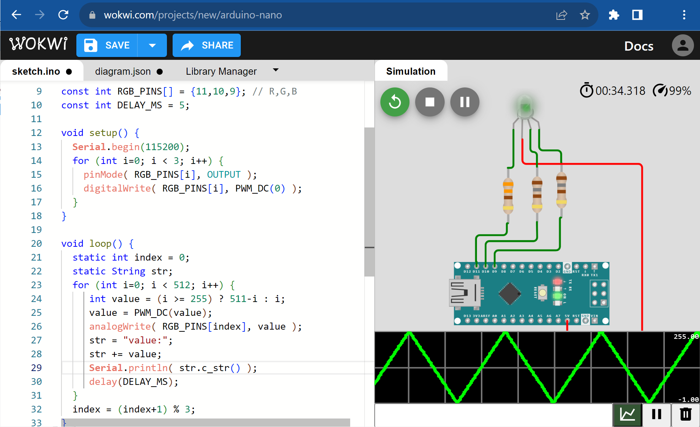
รูป: Wokwi Simulator - Arduino Nano + RGB LED (active-low, PWM-based)
ตัวอย่างโค้ดต่อไปนี้ สาธิตการกำหนดค่าสี (Color Code) แบบ 24 บิต (R, G, B อย่างละ 8 บิต)
ซึ่งมีการเก็บข้อมูลเป็นตัวเลขจำนวนเต็ม uint32_t ในอาร์เรย์ COLORS และมีการเปลี่ยนค่าสีไปตามลำดับ
// #define ACTIVE_LOW
#ifdef ACTIVE_LOW
#define PWM_DC(x) (255-(x))
#else
#define PWM_DC(x) (x)
#endif
const int RGB_PINS[] = {11,10,9}; // R,G,B pins
const int DELAY_MS = 500; // delay time in msec.
const uint32_t COLORS[] = {
0xff0000, 0x00ff00, 0x0000ff, 0xffff00,
0xff00ff, 0x00ffff, 0xffffff, 0x000000
};
const uint8_t NUM_COLORS = sizeof(COLORS)/sizeof(uint32_t);
void setup() {
for (int i=0; i < 3; i++) {
pinMode( RGB_PINS[i], OUTPUT );
analogWrite( RGB_PINS[i], PWM_DC(0) );
}
}
void loop() {
// A static local variable used to keep the current color index.
static int index = 0;
uint32_t color = COLORS[ index ];
for ( int i=2; i >= 0; i-- ) {
analogWrite( RGB_PINS[i], PWM_DC(color & 0xff) );
color >>= 8;
}
delay( DELAY_MS );
index = (index+1) % NUM_COLORS;
}
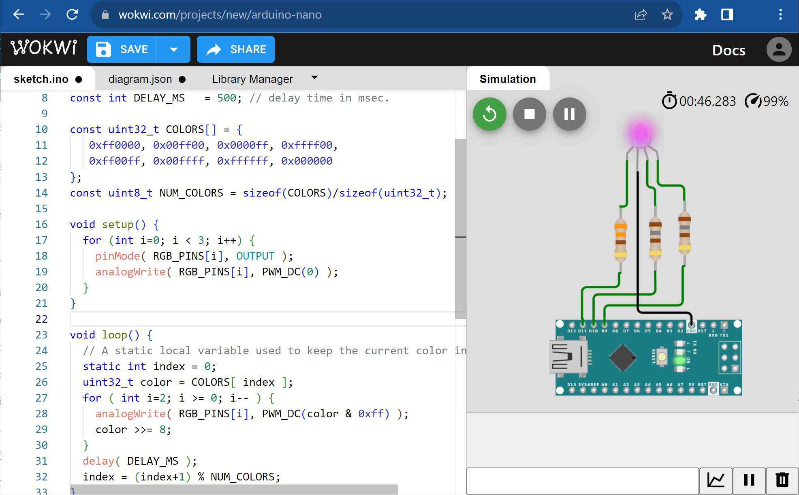
รูป: Wokwi Simulator - Arduino Nano + RGB LED (active-high, PWM-based)
ตัวอย่างการนำไปต่อวงจรโดยใช้บอร์ด Super-Mini ESP32C3 และเลือกใช้ขา GPIO-4 GPIO-2 และ GPIO-3 สำหรับโมดูล RGB LED (active-low)
ข้อสังเกต: การเรียงขาควบคุมของแต่ละโมดูล อาจแตกต่างกัน เช่น {V,R,G,B} หรือ {V,R,B,G}
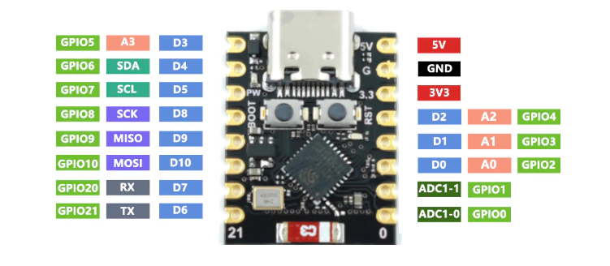
รูป: แผนผังแสดงตำแหน่งขาของบอร์ด Super-Mini ESP32-C3
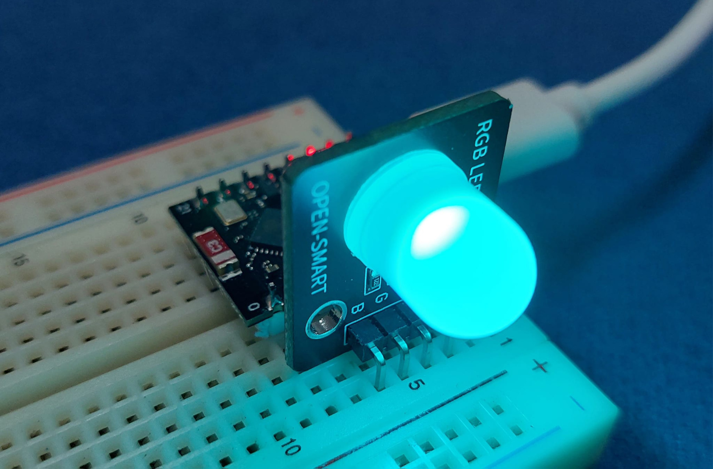
รูป: การทดลองใช้โมดูล RGB LED (OpenSmart, Black PCB) ร่วมกับบอร์ด ESP32-C3
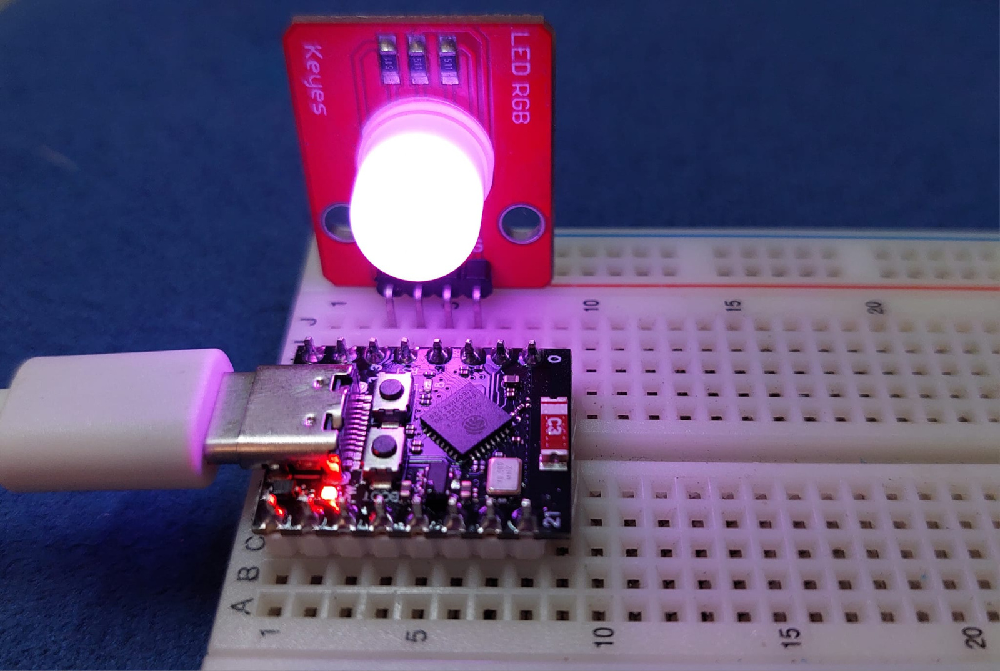
รูป: การทดลองใช้โมดูล RGB LED (Keyes, Red PCB) ร่วมกับบอร์ด ESP32-C3
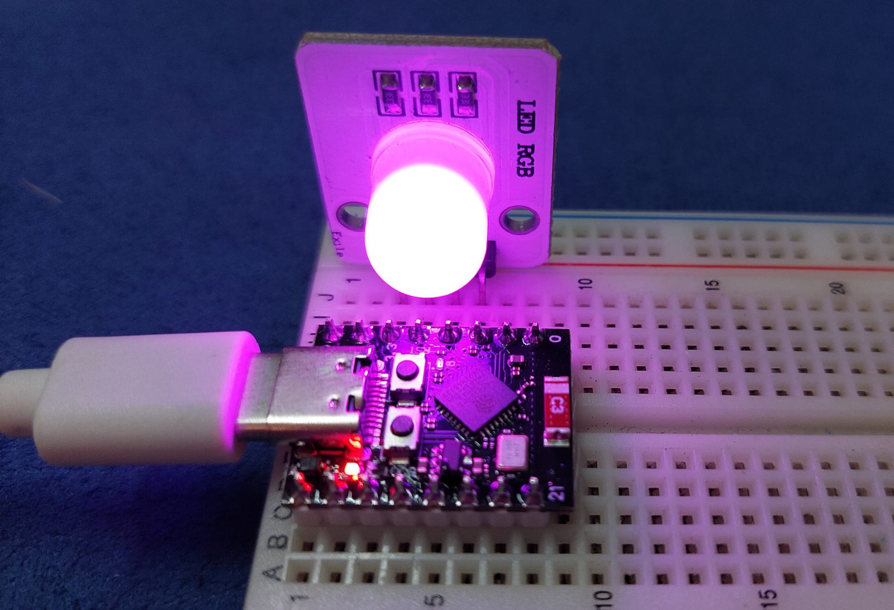
รูป: การทดลองใช้โมดูล RGB LED (White PCB) ร่วมกับบอร์ด ESP32-C3
โค้ดถัดไปสาธิตการเขียนโค้ด Arduino สำหรับ ESP32C3 ซึ่งสามารถใช้คำสั่งของ FreeRTOS API ได้ และในตัวอย่างนี้ ได้สาธิตการสร้างทาสก์ (Task) สำหรับ 3 สี และใช้งานไบนารีเซมาฟอร์ (Binary Semaphore) เพื่อทำให้ LED ของแต่ละสี มีการติดและดับไปตามลำดับ
#define ACTIVE_LOW
#ifdef ACTIVE_LOW
#define LED_ON (LOW)
#else
#define LED_ON (HIGH)
#endif
#define LED_OFF (!LED_ON)
const int NUM_TASKS = 3;
// Define LED pins
const int LED_PINS[] = {4,3,2};
// Define binary semaphore handles
SemaphoreHandle_t bin_semaphores[ NUM_TASKS ];
// Task entry function
void blinkLED(void *pvParameters) {
int index = (int)pvParameters;
int pin = LED_PINS[index];
pinMode( pin, OUTPUT );
digitalWrite( pin, LED_OFF );
SemaphoreHandle_t bin_sem;
while (1) {
bin_sem = bin_semaphores[index];
xSemaphoreTake( bin_sem, portMAX_DELAY); // Wait for semaphore
digitalWrite( pin, LED_ON ); // Turn on LED
vTaskDelay(1000 / portTICK_PERIOD_MS); // Delay for 1 second
digitalWrite( pin, LED_OFF ); // Turn off LED
bin_sem = bin_semaphores[(index+1)%NUM_TASKS];
xSemaphoreGive( bin_sem ); // Release semaphore for the next task
}
}
void setup() {
Serial.begin(115200); // Need to enable USB CDC on boot.
//while(!Serial);
delay(200);
sys_info();
// Create binary semaphores
for (int i=0; i < NUM_TASKS; i++) {
bin_semaphores[i] = xSemaphoreCreateBinary();
xSemaphoreTake( bin_semaphores[i], 0 /* not blocking*/ );
}
// Give a semaphore to the first task.
xSemaphoreGive( bin_semaphores[0] );
// Create FreeRTOS tasks
for (int i=0; i < NUM_TASKS; i++) {
xTaskCreate( blinkLED, "BlinkLED", 512, (void *)i, 1, NULL );
}
}
void loop() {
// empty for the main task
}
void sys_info() {
Serial.println("=========================================");
Serial.printf( "Arduino ESP32 Core v%u.%u.%u\n",
ESP_ARDUINO_VERSION_MAJOR,
ESP_ARDUINO_VERSION_MINOR,
ESP_ARDUINO_VERSION_PATCH );
Serial.flush();
Serial.printf("Espressif IDF: %s\n", ESP.getSdkVersion() );
Serial.printf("Chip Revision %lu\n", ESP.getChipRevision() );
Serial.printf("Cpu Freq. %lu MHz\n", ESP.getCpuFreqMHz() );
Serial.printf("Heap (total/free): %lu / %lu bytes\n",
ESP.getHeapSize(), ESP.getFreeHeap());
Serial.printf("PSRAM (toal/free): %lu / %lu bytes\n",
ESP.getPsramSize(), ESP.getFreePsram());
Serial.printf("Flash Size: %lu MB, Flash Speed: %lu MHz\n",
ESP.getFlashChipSize()/(1024*1024UL),
ESP.getFlashChipSpeed()/(uint32_t) 1e6 );
Serial.flush();
// more info...
Serial.printf("Espressif chip model: %s\n",
ESP.getChipModel() );
Serial.printf("Number of CPU Cores: %d\n",
ESP.getChipCores() );
String str;
switch(ESP.getFlashChipMode()) {
case FM_QIO: str = "QIO"; break;
case FM_QOUT: str = "QOUT"; break;
case FM_DIO: str = "DIO"; break;
case FM_DOUT: str = "DOUT"; break;
default: str = "Unknown"; break;
}
Serial.printf("Flash model: %s\n", str.c_str() );
Serial.println("=========================================\n");
Serial.flush();
}
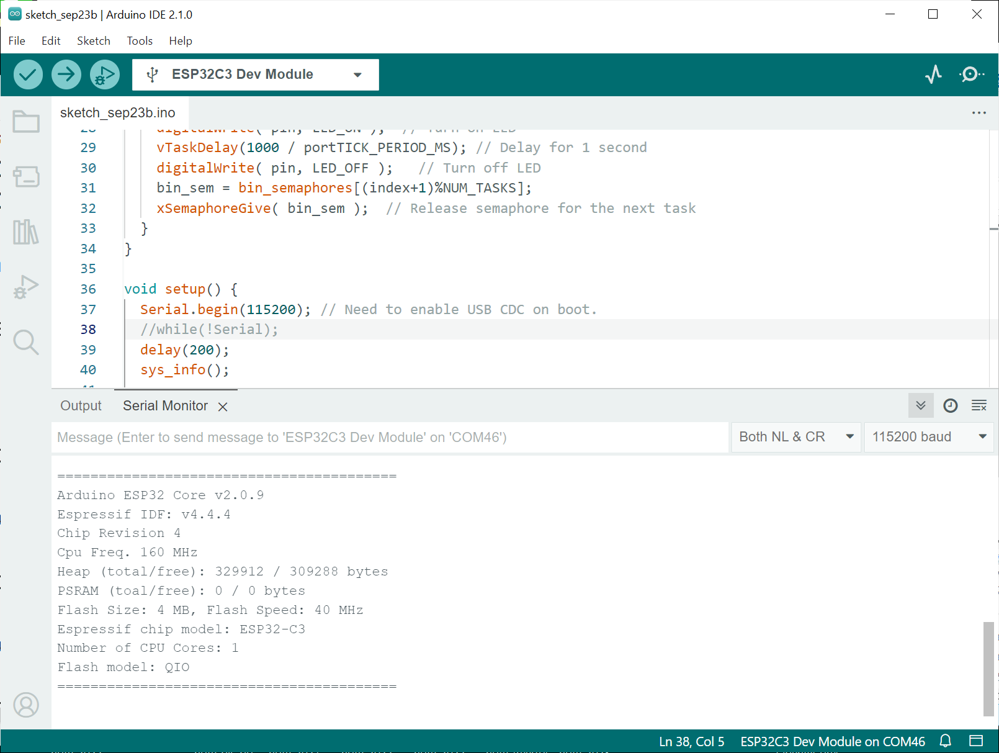
รูป: ตัวอย่างข้อความเอาต์พุตจาก Arduino Serial Monitor
▷ กล่าวสรุป#
บทความนี้นำเสนอการใช้งานโมดูล RGB LED และตัวอย่างการเขียนโค้ด Arduino Sketch เพื่อกำหนดสถานะการติดหรือดับของ LED และการสร้างสัญญาณ PWM เพื่อปรับค่าความสว่างของ LED
This work is licensed under a Creative Commons Attribution-ShareAlike 4.0 International License.
Created: 2023-09-23 | Last Updated: 2023-09-24